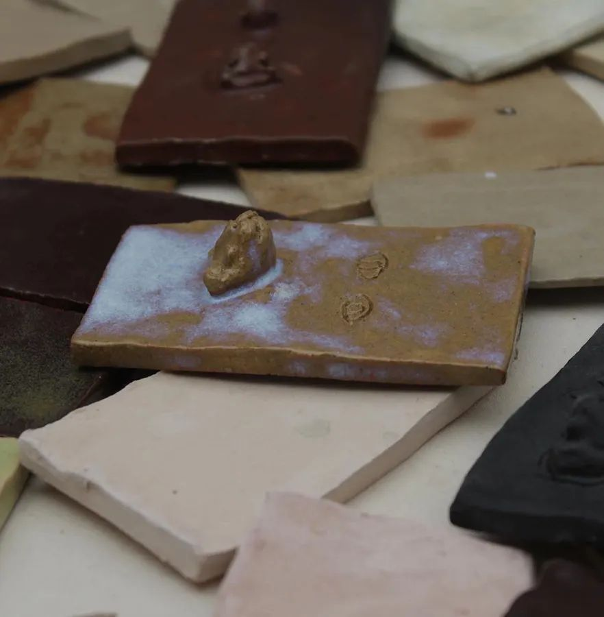

À la manière d’une conteuse d’histoires, Fanny Irina relate des récits accompagnés de paysages, personnages et objets hybrides. Au travers des matériaux tels que la céramique, le crayon, le pastel, la peinture, le textile, l’artiste se questionne sur ses métamorphoses, sur les multiples corps qu’elle éprouve. Fanny Irina mène un travail introspectif à la croisée du fantastique et de l’intime, mêlant aussi les questions d’enracinements et de réenchantement des espaces.
« Dans les paysages dessinés, les personnages éprouvent pleinement leurs métamorphoses. Ils sont nomades, en ermite, les corps préservés du jugement social. La peau comme un pelage, dans un repos et un silence qui laisse place aux langues internes. Mon désir de création est impulsé par le besoin de parcourir ces sensations d’entre-deux et ces empreintes du corps, d’explorer leurs subtilités et leurs origines. L’espace est parsemé de symboles intimes, d’histoires. Je crée des formes qui m’accompagnent, transforme mes coquillages en fossiles, fabrique les reliques de ce qui m'a traversé »
Fanny Irina a initié un travail de céramique en 2022. Des plaques étalées sur une table appellent notre regard, nous intriguent. Inspirées d’un jeu de cartes, les oeuvres de Fanny en ont le format mais composent un jeu dont on ne connait pas les règles. Certaines sont planes, recouvertes de différents émaux, brillants ou mats, parfois presque gourmands, plus ou moins irisés. Elles semblent contenir en puissance les formes que l’on retrouve sculptées à la surface d’autres cartes – à moins que ce ne soit au fond d’elles ? Des têtes d’animaux, peut-être des totems, un loup, un renard, un poisson, un ours, un lion. Ils apparaissent ou disparaissent, ils ne se dévoilent pas complètement, encore protégés par leur monde de terre. Les cartes sont construites à la main, le toucher permettant la surprise de ces apparitions presque magiques. Ces cartes accompagnent Fanny tel des présences intimes. Une certaine tendresse s’en dégage, un trouble aussi peut-être, né de la confrontation à ces regards curieusement familiers. Une sorte d’inquiétante étrangeté qui résonne en cela pleinement avec les autres œuvres de l’artiste.
Fanny Irina nous invite dans son univers à partager des moments hors du temps, à rencontrer des entités, parfois proches d’un état originel qui racontent quelque chose des émotions qui habitent l’artiste et qui en retour aiguisent notre attention de l’intime et s’adressent à notre intériorité. Télécharger le CV de l'artiste (PDF, opens in a new tab.) Privacy Policy Manage cookies Copyright © 2026 Galerie Cécile Fakhoury Site by Artlogic Go Souscrivez à notre bulletin Instagram , opens in a new tab. Facebook , opens in a new tab. This website uses cookies This site uses cookies to help make it more useful to you. Please contact us to find out more about our Cookie Policy. Manage cookies Reject non essential Accept
Expositions à la galerie